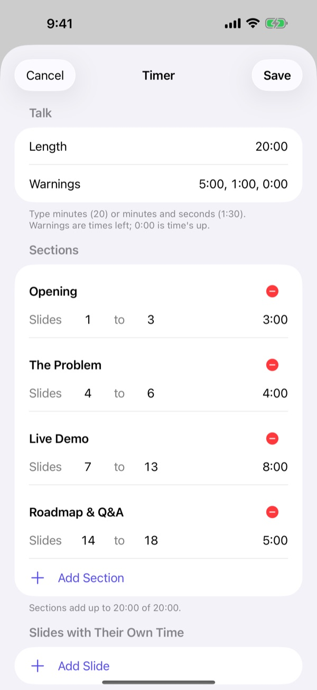
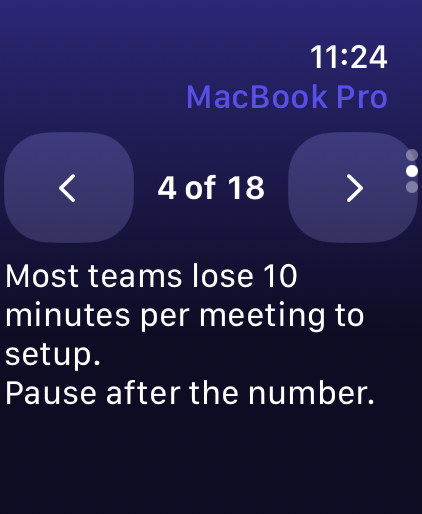
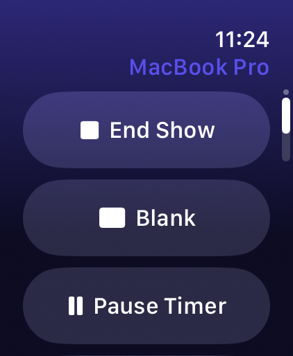
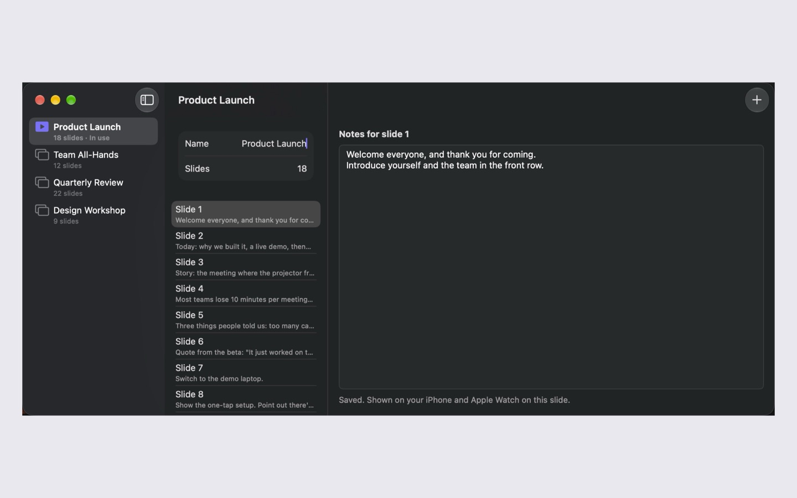
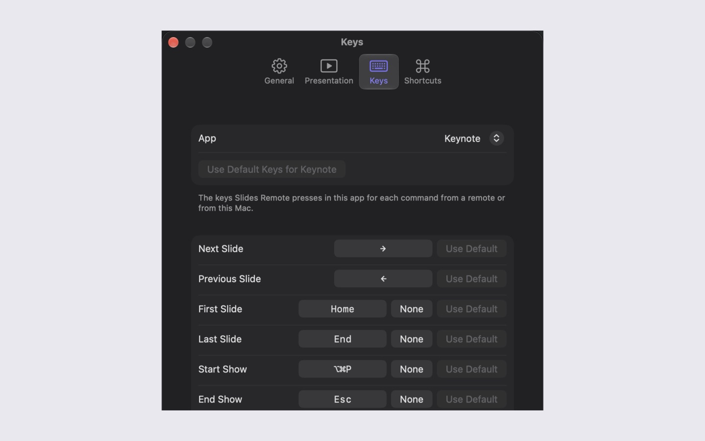
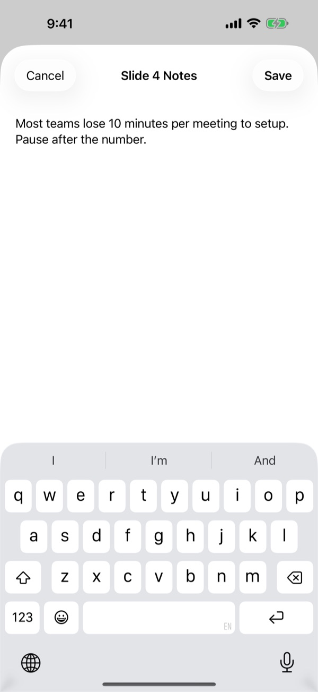
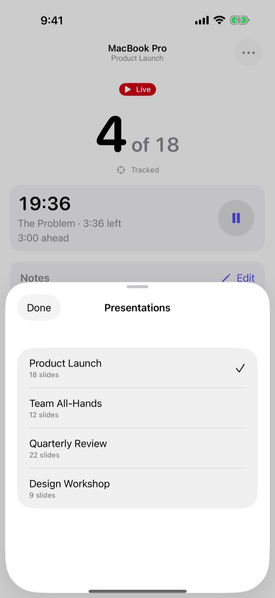
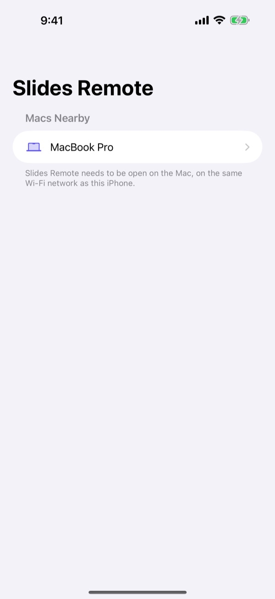

按下“开始放映”，然后轻点“下一张”。备注随幻灯片切换，计时器会告诉你是提前还是落后。
也可以用键盘：按 ← → 切换幻灯片，按 B 黑屏。计时器以 20 倍速运行，留意手腕上的轻触提示。
Slides Remote 按下的正是你自己会按的键，因此适用于你已经在用的演示 App。
Keynote、PowerPoint、浏览器中的 Google Slides、预览，以及大多数其他演示 App。
自动在两者之间切换。无需互联网、路由器或账户，任何场地的网络都能用。
在电脑或手机上撰写。演示时，备注会随之显示在你的手机和手腕上。
设置演讲时长、提醒和每个环节的时长。是提前还是落后，一眼便知。
只需配对一次，两边屏幕上会显示同一个六位数代码。所有内容均经过加密，绝不离开你的设备。
旁白、语音控制、支持最大字号的动态字体、减弱动态效果和不以颜色区分。
幻灯片编号、当前环节的剩余时间，还有你准备要讲的内容，就在大大的“下一张”和“上一张”按钮上方。

轻点、转动数码表冠或互点两下，即可切换幻灯片。每次计时提醒和环节超时时，手表都会轻触你的手腕。


它常驻在菜单栏或通知区域，在遥控器连接时让电脑保持唤醒，还能为每个 App 分别设定每个命令所按的键。





无需订阅，没有广告，不用账户。如有需要，只需一次性解锁备注与计时器。
先在电脑上安装免费 App，再在手机上安装遥控 App。连接同一无线局域网，或处于蓝牙范围内即可。